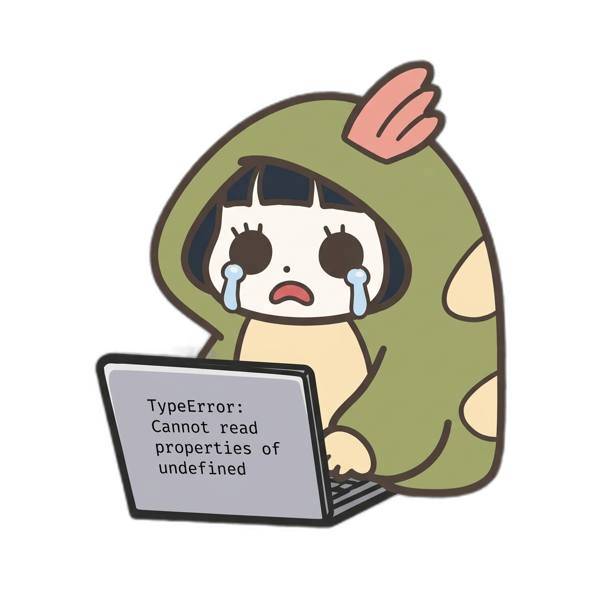

小学校PTAのお仕事に
AIで自動化すれば
AIで自動化すれば
ストレスフリー！
PTAママの負担を減らす！
このサイトでは、本を読んでくださった方限定の特典コンテンツをご利用いただけます。

メニュー一覧
mail
01
一斉送信テンプレート集
すぐに使えるお知らせメールのテンプレートをダウンロードできます。
build
02
作業効率化ツール
PTAのお仕事を効率化する便利なツールを利用できます。
fact_check
03
チェックリスト集
面倒なお仕事チェックをラクにするチェックリストです。
smart_display
04
活用動画ガイド
AIツールの使い方や活用方法を動画でわかりやすく解説します。
help_center
05
よくある質問Q&A
よくある質問とその回答をまとめています。
card_giftcard
06
特典コンテンツ一覧
書籍購入者限定の特典コンテンツ一覧です。
はじめにお読みください
初めての方は、使い方ガイドをご覧ください。